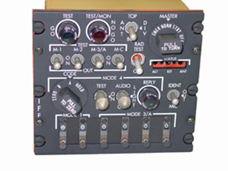
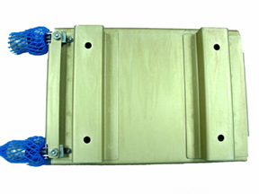

Transponder Set AN/APX-100(V) provides a complete diversity Identification Friend or Foe (IFF) system
in a small lightweight component package. It receives pulsed radio frequency interrogation signals in
any of six modes and transmits a pulse-coded reply in the appropriate mode. The transponder set operates
in modes 1, 2, 3/A, C, 4, and Test and provides identification and emergency reply codes in accordance with
DOD-AIMS 65-100. For mode 4 operation, the system in compatible with both KIT-1A/TSEC and KIT-1C/TSEC computers.
The system incorporates a built-in test (BIT) which provides a rapid verification of the status of the unit.

The difference between various models of AN/APX-100(V) equipments are primarily in voltage and color of the panel lamps.
There is one exception in the RT-1157.
Specifications:
Weight: 1.76 lbs
5.75" x 5.25" x 3.64"
About the MT-4811/APX-100 Mount:
The MT-4811 is the mount for the Receiver-Transmitter RT-1157B/APX-100 or RT-1471/APX-100. The unit mounts in an
aircraft console or instrument panel using quick-disconnect dzus fasteners. Guide pin holes are provided at the
unit's rear surface.
